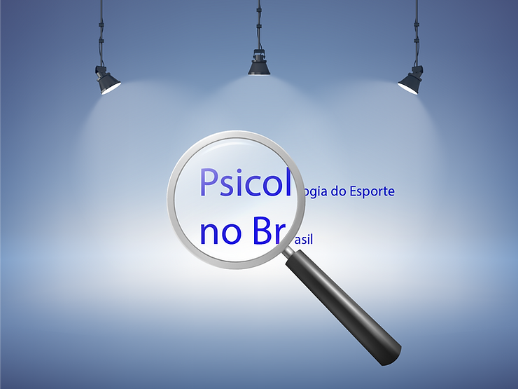

A ABRAPESP através do Comitê de Atualização Profissional está realizando dois levantamentos nacionais que pretendem mapear a Psicologia do Esporte.
O primeiro quer obter um retrato dos grupos de pesquisa e grupos de estudo em psicologia do esporte no Brasil.
Para caracterizar melhor, explica o psicólogo Matheus Vasconcelos, que coordena o trabalho, o estudo entende como:
GRUPO DE PESQUISA: aqueles vinculados e aprovados pelo CNPQ em atividade nas instituições de ensino superior e pesquisa no país.
GRUPO DE ESTUDO: aqueles destinados para debates, estudos, supervisão, formação ou similar que sejam organizados por instituições, empresas ou grupos profissionais.
O objetivo é encontrar os responsáveis que aceitem participar.
Você o seu caso? Clique aqui
O segundo levantamento tem o intuito de conhecer a atuação profissional da psicologia do esporte para auxiliar na tomada de decisão da Associação frente aos desafios que o cenário brasileiro impõe aos profissionais e os estudantes de psicologia no campo esportivo.
Você quer participar da pesquisa? Clique aqui